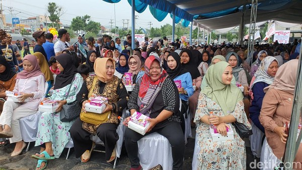

Kegiatan Kami
Kami berkomitmen untuk membantu masyarakat mencapai tujuan Zero Hunger melalui berbagai program dan inisiatif berikut:

Program Pemberian Makanan
Program ini dirancang untuk memberikan makanan bergizi kepada keluarga yang membutuhkan di komunitas yang terdampak kelaparan.
Lihat Kegiatan
Program Edukasi
Kami menyediakan pendidikan tentang pentingnya pola makan sehat dan cara memanfaatkan sumber daya lokal untuk makanan bergizi.
Lihat Kegiatan
Pemberian Makanan Gratis
program yang bertujuan untuk memberikan makanan gratis kepada siswa-siswi sekolah yang membutuhkan.
Lihat Kegiatan

Bantuan Darurat
Kami memberikan bantuan makanan dan kebutuhan dasar lainnya untuk masyarakat yang terkena bencana alam atau krisis lainnya.
Lihat Kegiatan